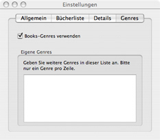
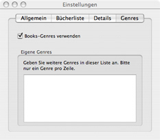

Genre Preferences
By default, Books provides a predefined list of genres for categorizing your books. You
may add your own as needed by entering the new genres in the "Custom Genres" text box (one
per line).

By default, Books provides a predefined list of genres for categorizing your books. You
may add your own as needed by entering the new genres in the "Custom Genres" text box (one
per line).
